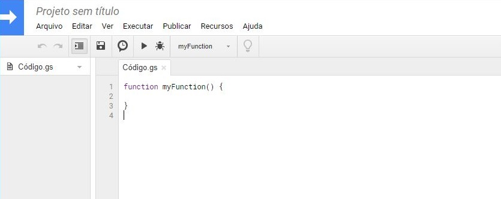
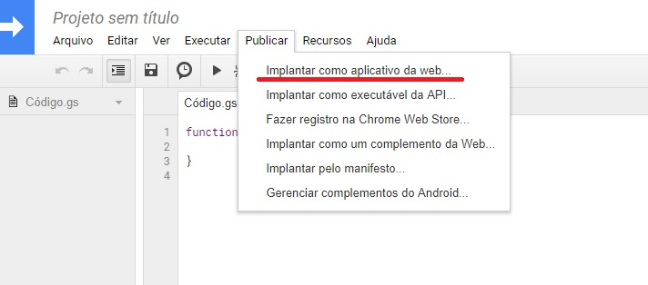
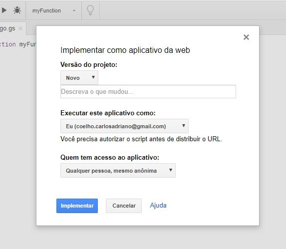
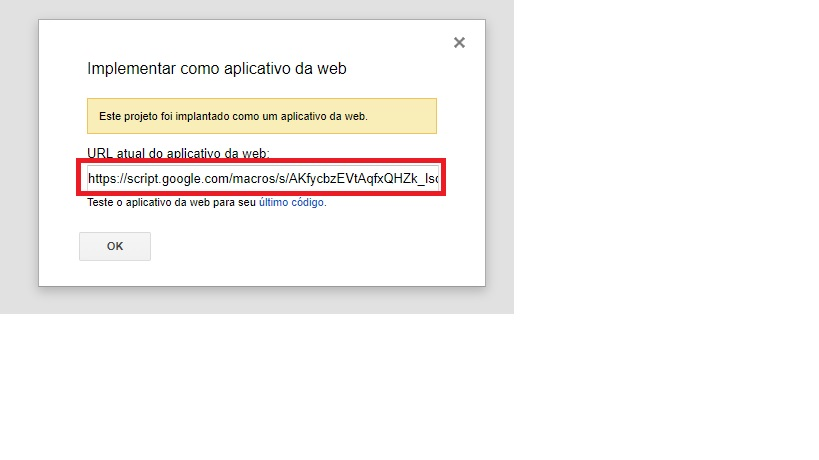

Carlos Adriano
CRIANDO E PUBLICANDO SEU WEB APP COM APPS SCRIPT
22 de Janeiro de 2019
Neste post, você vai ver como criar um projeto com Google Apps Script e como publicar o seu web app. A primeira coisa a se fazer é acessar o site https://script.google.com/home/start e clicar em Start Scripting. Se for preciso, faça login na sua conta google.
Para iniciar um novo projeto, clique em Novo Script e o editor de código vai abrir. O ambiente pode ser visto na figura.
Clique sobre Projeto sem título, coloque o nome do seu projeto na caixa que abrir e clique em OK. Se for usar algum có´;digo pronto, apague o có´;digo gerado automaticamente.
Para publicar seu web app, clique no menu Publicar e depois em Implantar como aplicativo da web... como pode ser visto na figura.
Em versão do projeto, escolha Novo sempre que for publicar seu web app. Em executar este aplicativo como, escolha Eu e na opção Quem tem acesso ao aplicativo, escolha Qualquer pessoa, mesmo anônima. Por fim, clique em Implementar.
Vai aparecer uma caixa, como mostrado na figura, avisando que o projeto foi implantado como aplicativo da web. A url do aplicativo está em vermelho na figura. Esta url é usada para acessar o web app de outro aplicativo.

Carlos Adriano
Estudante de Engenharia Elétrica e programador.